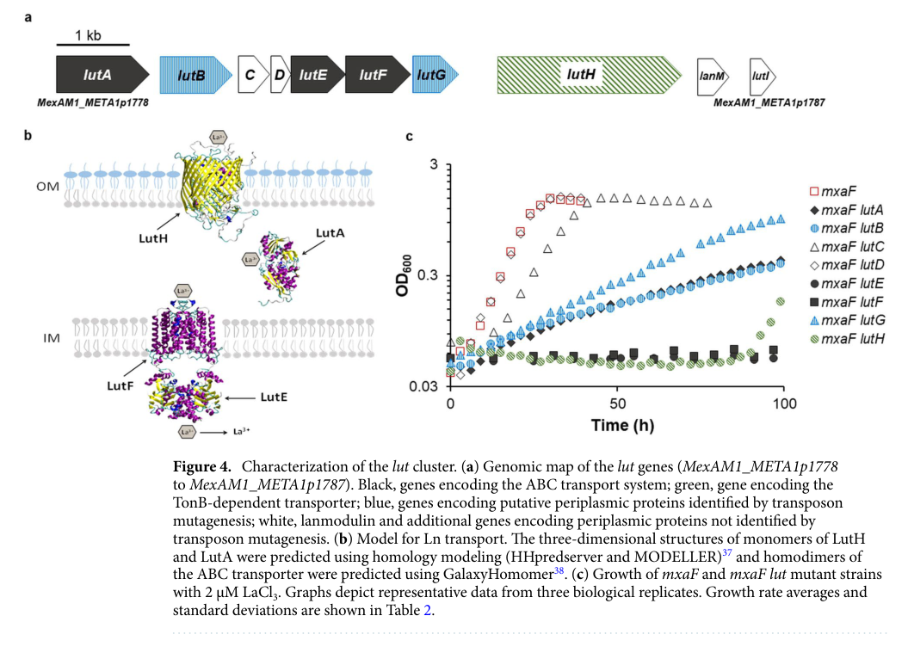

TonB-dependent outer membrane receptor (locus MexAM1_META1p4129) of the TonB-dependent receptor family. Reported as mluA (methylolanthanin uptake A) within the mll cluster, functioning in active uptake of a lanthanide-metallophore (methylolanthanin) complex across the outer membrane into the periplasm, and as a cell-surface signaling receptor that couples to the anti-sigma factor MluR. Note that primary-literature retrieval for the bare accession C5B1I1 is sparse and the family-level mechanism (outer-membrane, TonB/ExbB/ExbD-energized uptake of a scarce metal-chelate substrate delivered to the periplasm) is the most robustly supported function; the specific lanthanide-metallophore substrate assignment rests on the mll-cluster characterization.
| GO Term | Evidence | Action | Reason |
|---|---|---|---|
|
GO:0006826
iron ion transport
|
IEA
GO_REF:0000043 |
REMOVE |
Summary: Incorrect substrate. This TonB-dependent receptor is not an iron transporter; it is implicated in uptake of a lanthanide-metallophore complex, and even at the family level the substrate of this specific accession cannot be assigned as iron. The keyword-derived iron transport annotation reflects generic TonB/siderophore-family inference, not iron specificity.
Supporting Evidence:
file:METEA/mluA/mluA-deep-research-falcon.md
there is no locus-specific genetic/biochemical evidence in the retrieved corpus identifying the precise ligand for UniProt C5B1I1 in AM1
|
|
GO:0009279
cell outer membrane
|
IEA
GO_REF:0000120 |
ACCEPT |
Summary: Correct. As a TonB-dependent receptor of the TonB-dependent receptor family, the protein is an integral outer membrane beta-barrel transporter. Both deep-research sources concur on outer-membrane localization, consistent with the UniProt subcellular location annotation.
Supporting Evidence:
file:METEA/mluA/mluA-deep-research-falcon.md
Thus C5B1I1 should be localized to the
file:METEA/mluA/mluA-deep-research-perplexity.md
the protein is an integral outer membrane protein with the characteristic 22-stranded β-barrel structure typical of this protein family
|
|
GO:0015343
siderophore-iron transmembrane transporter activity
|
IEA
GO_REF:0000002 |
MODIFY |
Summary: Wrong specificity but correct general activity. The protein is a TonB-dependent active uptake transporter, but the substrate is a lanthanide-metallophore, not an iron-siderophore. Rather than removing the transporter activity outright, generalize to transmembrane transporter activity (the iron-siderophore reaction defined for this term does not apply). The family-level uptake-transporter function is well supported; the precise ligand is not iron.
Proposed replacements:
transmembrane transporter activity
Supporting Evidence:
file:METEA/mluA/mluA-deep-research-falcon.md
C5B1I1 most likely functions as an
file:METEA/mluA/mluA-deep-research-falcon.md
the substrate should be reported as
|
|
GO:0015344
siderophore uptake transmembrane transporter activity
|
IEA
GO_REF:0000118 |
MODIFY |
Summary: Wrong specificity but correct general activity. The TreeGrafter-propagated iron-siderophore uptake term over-specifies the substrate. The protein performs TonB-energized active uptake transport, but of a lanthanide-metallophore rather than an iron-siderophore; generalize to transmembrane transporter activity.
Proposed replacements:
transmembrane transporter activity
Supporting Evidence:
file:METEA/mluA/mluA-deep-research-falcon.md
they mediate uptake of substrates
|
|
GO:0015891
siderophore transport
|
IEA
GO_REF:0000002 |
REMOVE |
Summary: Incorrect specificity. Siderophore transport is defined as movement of low-molecular-weight Fe(III)-chelating substances. This receptor is implicated in uptake of a lanthanide-metallophore complex (methylolanthanin), not an Fe(III) siderophore, so the term is inappropriate as an over-specific substrate assignment.
Supporting Evidence:
file:METEA/mluA/mluA-deep-research-falcon.md
the substrate should be reported as
|
|
GO:0019867
outer membrane
|
IEA
GO_REF:0000002 |
KEEP AS NON CORE |
Summary: Correct but less specific than the cell outer membrane annotation. The protein is an outer-membrane TonB-dependent beta-barrel transporter; the Gram-negative cell outer membrane term (GO:0009279) is preferred and is already ACCEPTed and used in core_functions. Keep this broader term as non-core because it is redundant with the more specific GO:0009279 for core representation.
Supporting Evidence:
file:METEA/mluA/mluA-deep-research-falcon.md
Thus C5B1I1 should be localized to the
|
|
GO:0033214
siderophore-iron import into cell
|
IEA
GO_REF:0000120 |
REMOVE |
Summary: Incorrect substrate. This term describes import of Fe(III) solubilized by ferric-iron-specific siderophores. The receptor imports a lanthanide-metallophore complex into the periplasm, not siderophore-iron, so the term is inappropriate.
Supporting Evidence:
file:METEA/mluA/mluA-deep-research-falcon.md
there is no locus-specific genetic/biochemical evidence in the retrieved corpus identifying the precise ligand for UniProt C5B1I1 in AM1
|
|
GO:0038023
signaling receptor activity
|
IEA
GO_REF:0000002 |
KEEP AS NON CORE |
Summary: Plausible and supported. TonB-dependent receptors of this signaling subtype possess an N-terminal signaling (Secretin/TonB short N-terminal) domain; for this protein the mll-cluster work describes a cell-surface signaling system in which the receptor interacts with the anti-sigma factor MluR upon ligand binding. Keep as a non-core signaling-receptor function alongside the core uptake-transport role; the review itself characterizes this as ancillary to the primary metal-chelate uptake-transport function.
Supporting Evidence:
file:METEA/mluA/mluA-deep-research-perplexity.md
The protein contains an N-terminal signaling domain that interacts with the anti-sigma factor MluR, encoded by the adjacent *mluR* gene within the same operon
|
The research report should be a detailed narrative explaining the function, biological processes, and localization of the gene product. Citations should be given for all claims.
You should prioritize authoritative reviews and primary scientific literature when conducting research. You can supplement
this with annotations you find in gene/protein databases, but these can be outdated or inaccurate.
We are specifically interested in the primary function of the gene - for enzymes, what reaction is catalyzed, and what is the substrate specificity? For transporters, what is the substrate? For structural proteins or adapters, what is the broader structural role? For signaling molecules, what is the role in the pathway.
We are interested in where in or outside the cell the gene product carries out its function.
We are also interested in the signaling or biochemical pathways in which the gene functions. We are less interested in broad pleiotropic effects, except where these elucidate the precise role.
Include evidence where possible. We are interested in both experimental evidence as well as inference from structure, evolution, or bioinformatic analysis. Precise studies should be prioritized over high-throughput, where available.
The UniProt accession C5B1I1 is annotated as a TonB-dependent siderophore receptor protein from Methylorubrum extorquens AM1 and contains canonical TonB-dependent transporter (TBDT) domains (plug domain + TonB-dependent receptor β-barrel) consistent with an outer-membrane, TonB/ExbB/ExbD-coupled uptake receptor for scarce extracellular nutrients (classically ferric-siderophore complexes, but TBDTs can also transport other micronutrients). Mechanistically, TBDTs are 22-strand β-barrel proteins occluded by a plug domain and energized by the TonB–ExbB–ExbD system via a conserved TonB box to open the pore for substrate translocation into the periplasm (Braun 2024) (braun2024substrateuptakeby pages 1-2, braun2024substrateuptakeby pages 2-4, braun2024substrateuptakeby pages 4-6).
Critical identity verification outcome: across the accessible primary literature for M. extorquens AM1 lanthanide/metal uptake, the gene symbol “mluA” is not explicitly linked to a characterized AM1 TonB-dependent receptor (e.g., LutH) or to the lut cluster. Instead, AM1’s best-characterized TonB-dependent receptor for metal uptake is LutH (lanthanide uptake), which is distinct from the UniProt description “siderophore receptor” and is encoded in the AM1 lut locus (MexAM1_META1p1778–p1787). Therefore, the symbol mluA should be treated as ambiguous/under-documented for C5B1I1 in the current literature corpus, and functional annotation should be grounded primarily in (i) the TonB-dependent receptor family mechanism and (ii) AM1 metal-uptake paradigms where relevant, without claiming a specific ligand unless experimentally supported (roszczenkojasinska2020geneproductsand pages 6-7, roszczenkojasinska2020geneproductsand pages 7-10).
Definition and architecture. TBDTs are outer-membrane β-barrel transport proteins whose lumen is blocked by an internal plug domain; they mediate uptake of substrates “too large or too scarce” for diffusion through porins and are powered by the TonB energy transduction system (braun2024substrateuptakeby pages 1-2). A conserved five-residue TonB box in the transporter N-terminus is the main binding site for TonB (braun2024substrateuptakeby pages 1-2).
Energy coupling. Transport is energized by the proton motive force across the inner membrane, transmitted via ExbB–ExbD to TonB. A recurring structural stoichiometry from cryo-EM is ExbB_5–ExbD_2, where five ExbB subunits form a pore enclosing an ExbD dimer (braun2024substrateuptakeby pages 14-15, braun2024substrateuptakeby pages 1-2). Energized TonB interacts with the TonB box and induces plug movement/unfolding to open a channel and allow substrate passage into the periplasm (braun2024substrateuptakeby pages 1-2, celia2026advancesinunderstanding pages 8-9).
Substrate classes and ligand specificity. TBDTs are best known for ferric-siderophore and vitamin B_12 uptake, but the family supports a broad substrate range (braun2024substrateuptakeby pages 1-2). Without substrate-bound structures, uptake assays, or genetics for the specific receptor, ligand specificity cannot be assigned confidently.
While UniProt describes C5B1I1 as a “siderophore receptor,” the best experimentally defined metal-uptake TBDT system in M. extorquens AM1 concerns lanthanide (Ln) uptake via the lut pathway. This system provides a mechanistic template for how TBDTs participate in metal-chelate uptake in methylotrophs:
These data support a general inference relevant to C5B1I1: in methylotrophs, TBDTs frequently function in metal acquisition by importing chelated metal complexes to the periplasm for downstream periplasmic trafficking and/or cytoplasmic import (daumann2022aperspectiveon pages 5-8).
Given the absence of explicit mapping between the gene symbol mluA and C5B1I1 in the retrieved primary literature corpus, the most defensible statement is:
“The gene symbol mluA is ambiguous or literature is limited for this specific protein in Methylorubrum extorquens AM1; thus, functional annotation for UniProt C5B1I1 should be based on its TonB-dependent receptor family/domain architecture and general Gram-negative TBDT mechanisms, rather than assuming it corresponds to LutH or other named AM1 receptors.” (roszczenkojasinska2020geneproductsand pages 6-7, roszczenkojasinska2020geneproductsand pages 7-10)
Outer-membrane active uptake receptor. Based on domain/family assignment as a TonB-dependent receptor and the established mechanism of TBDTs, C5B1I1 most likely functions as an outer-membrane receptor/transporter that binds an extracellular ligand (often a metal-chelate, e.g., ferric-siderophore) and—when energized by TonB—translocates it into the periplasm (braun2024substrateuptakeby pages 1-2, braun2024substrateuptakeby pages 2-4).
Energy transduction dependency. Functionally, this implies dependency on the TonB–ExbB–ExbD system for transport, with ExbB_5–ExbD_2 serving as an inner-membrane motor that relays proton motive force to TonB (braun2024substrateuptakeby pages 14-15, braun2024substrateuptakeby pages 1-2).
Known at the family level: TBDTs can mediate uptake of Fe(III)-siderophores and other micronutrients, with binding sites formed by extracellular loops and plug/barrel interfaces (braun2024substrateuptakeby pages 4-6).
Unknown for C5B1I1 specifically: there is no locus-specific genetic/biochemical evidence in the retrieved corpus identifying the precise ligand for UniProt C5B1I1 in AM1. Therefore, the substrate should be reported as “unknown; predicted siderophore/metal-chelate” unless validated experimentally.
Relevant methylotroph precedent: methylotrophs use related TBDTs (e.g., LutH) in uptake of lanthanide complexes, suggesting that metal-chelate uptake by TBDTs is biologically central in this clade (roszczenkojasinska2020geneproductsand pages 7-10, daumann2022aperspectiveon pages 5-8).
Outer membrane: TBDTs are outer-membrane β-barrel proteins by definition (braun2024substrateuptakeby pages 1-2, braun2024substrateuptakeby pages 2-4). Thus C5B1I1 should be localized to the outer membrane, with extracellular loops exposed externally and a periplasmic TonB box interface.
Periplasmic destination of transported ligand: canonical TBDT transport delivers substrate to the periplasm, from which periplasmic binding proteins and inner-membrane ABC transporters can traffic cargo into the cytoplasm (braun2024substrateuptakeby pages 1-2, roszczenkojasinska2020geneproductsand pages 7-10, daumann2022aperspectiveon pages 5-8).
A key AM1 pathway connecting metal uptake to metabolism is the lanthanide switch, regulating methanol dehydrogenases. AM1 uses a lanthanide-dependent periplasmic methanol dehydrogenase (XoxF1), and lanthanide availability controls expression of mxa vs xox systems; uptake into cells is mediated by a TonB/ABC-linked pathway and is subject to repression under excess metal (roszczenkojasinska2020geneproductsand pages 1-4, roszczenkojasinska2020geneproductsand pages 7-10). In AM1, lanthanides can be transported to the cytoplasm and stored as cytoplasmic inclusions resembling polyphosphate granules, including crystalline lanthanum–phosphate deposits observed by TEM/EDS (roszczenkojasinska2020geneproductsand pages 10-11, roszczenkojasinska2019lanthanidetransportstorage pages 1-5).
Although C5B1I1 is not shown to be LutH, these results establish that AM1 couples TonB-dependent outer-membrane transport to downstream periplasmic/cytoplasmic metal handling.
A 2024 mechanistic review summarizes the current structural model for TonB-dependent transport: plug-occluded β-barrels, TonB-box recognition, and ExbB_5–ExbD_2 stoichiometry mediating pmf-driven force transmission to open TBDTs for periplasmic import (braun2024substrateuptakeby pages 14-15, braun2024substrateuptakeby pages 1-2). This provides the most current authoritative framework for describing C5B1I1’s expected mechanism.
Shiina et al. (2023) identified a TonB-dependent receptor in Methylosinus trichosporium OB3b required for XoxF1 induction in the presence of lanthanides and showed that citrate can strengthen the switch, reinforcing the idea that TonB-dependent receptors are causal components of lanthanide-responsive regulation (shiina2023identificationofa pages 2-5). While not AM1, this is recent primary evidence for TonB receptor function in methylotroph metal switching.
AM1’s lanthanide uptake and mineral storage capacity has been explicitly framed as a basis for developing sustainable recovery of critical metals from “mining leachate, coal fly ash, and postconsumer electronics” (roszczenkojasinska2019lanthanidetransportstorage pages 1-5). Complementary work highlights RH AL1 as a candidate for environmentally friendly biorecovery and links such uptake to TonB-ABC transport systems including the lut cluster (wegner2021extracellularandintracellular pages 1-2).
A 2022 authoritative review describes emerging implementations: development of methylotroph strains/variants for gadolinium capture from medical waste streams and contaminated waters, and the repurposing of lanmodulin for biosensing and green separation (e.g., immobilized LanM sorbents) (daumann2022aperspectiveon pages 15-19). These approaches depend on biological metal binding/uptake traits that include TonB-dependent receptors and metallophore/lanthanophore systems (daumann2022aperspectiveon pages 11-15, zytnick2022discoveryandcharacterization pages 1-3).
Key quantitative values from recent and organism-relevant studies include:
* ExbB_5–ExbD_2 stoichiometry for the inner-membrane motor complex energizing TonB-dependent transport (braun2024substrateuptakeby pages 14-15, braun2024substrateuptakeby pages 1-2).
* AM1 lanthanide switch reporter outputs (RFU/OD_600): in MeOH without La(3+), mxa 323 ± 63 and xox1 44 ± 3; in MeOH + La(3+), mxa 61 ± 10 and xox1 206 ± 11 (roszczenkojasinska2020geneproductsand pages 7-10).
* AM1 mxaF lutH acclimation timeframe and growth: acclimation in ~90–120 h; growth rate 0.14 ± 0.02 h⁻¹ after acclimation (roszczenkojasinska2020geneproductsand pages 7-10).
* Cytoplasmic lanthanum–phosphate storage composition (TEM/EDS): La 22.2 wt%, P 15.1 wt%, O 51.1 wt% in crystalline cytoplasmic deposits (roszczenkojasinska2020geneproductsand pages 10-11).
* In OB3b, lanthanide switch perturbation conditions: 25 mM Ce and 50 mM citrate; ~3-fold reduction of MxaF in wild type under cerium (shiina2023identificationofa pages 2-5).
| Topic | Key finding | Quantitative/statistical data (if any) | Source (author, year) | URL | Citation ID |
|---|---|---|---|---|---|
| Ln uptake model in M. extorquens AM1 | The AM1 lut cluster encodes a proposed lanthanide uptake pathway in which LutH functions as the outer-membrane TonB-dependent receptor, LutA as a periplasmic binding/shuttling protein, and LutE/LutF as the inner-membrane ABC transporter for cytoplasmic import. | Cluster spans MexAM1_META1p1778–p1787; assays reported under 2 μM LaCl3. | Roszczenko-Jasińska et al., 2020 | https://doi.org/10.1038/s41598-020-69401-4 | (roszczenkojasinska2020geneproductsand pages 7-10) |
| lut cluster visualization/model | Figure 4 provides a concise visual summary of the functional annotation: panel (a) maps the lut genes, panel (b) diagrams Ln uptake across the outer membrane/periplasm/cytoplasmic membrane, and panel (c) links genotype to growth phenotype. | Genomic map for MexAM1_META1p1778–p1787; includes lutH in the modeled pathway. | Roszczenko-Jasińska et al., 2020, Figure 4 | https://doi.org/10.1038/s41598-020-69401-4 | (roszczenkojasinska2020geneproductsand media 5258917a) |
| Regulation / lanthanide switch in AM1 | Excess lanthanides repress expression of the TonB-dependent receptor gene and shift transcription from the Ca-dependent mxa system toward xox expression, linking outer-membrane uptake to methanol dehydrogenase remodeling. | WT reporter values in MeOH: mxa 323 ± 63 RFU/OD600 and xox1 44 ± 3; in MeOH + La3+: mxa 61 ± 10 and xox1 206 ± 11. | Roszczenko-Jasińska et al., 2020 | https://doi.org/10.1038/s41598-020-69401-4 | (roszczenkojasinska2020geneproductsand pages 1-4, roszczenkojasinska2020geneproductsand pages 7-10) |
| Alternative uptake / acclimation in AM1 | Even without LutH, AM1 can eventually acclimate and restore Ln-responsive growth/signaling, implying an alternative or slower outer-membrane entry route besides the canonical TonB receptor. | mxaF lutH acclimation occurred after ~90–120 h; acclimated growth rate 0.14 ± 0.02 h⁻¹. | Roszczenko-Jasińska et al., 2020 | https://doi.org/10.1038/s41598-020-69401-4 | (roszczenkojasinska2020geneproductsand pages 7-10) |
| Ln chelator supporting uptake | Methylolanthanin was identified as a biological lanthanide chelator in M. extorquens AM1; its production is required for normal Ln accumulation, supporting the idea that TonB receptors likely recognize a chelated Ln species rather than free ion alone. | Phyllosphere Ln concentrations cited as 0.7–7 μg/g dry weight; experiments used NdCl3 and Nd2O3 to probe low-solubility Ln responses. | Zytnick et al., 2022 | https://doi.org/10.1101/2022.01.19.476857 | (zytnick2022discoveryandcharacterization pages 1-3) |
| Homologous TonB receptor in methanotrophs | In Methylosinus trichosporium OB3b, a TonB-dependent receptor homologous to AM1 LutH is required for proper Ln-dependent MDH switching, strengthening family-level functional inference for LutH-like receptors in methylotrophs. | 25 mM Ce induced XoxF1; 50 mM citrate strengthened the switch; MxaF decreased by ~3-fold in WT. | Shiina et al., 2023 | https://doi.org/10.1128/aem.01413-22 | (shiina2023identificationofa pages 2-5) |
| LanA precedent from another methylotroph | In Methylotuvimicrobium buryatense 5GB1C, mutagenesis identified LanA, a TonB-dependent receptor required for the lanthanide switch; this established TBDRs as causal regulators/transport components in lanthanide biology. | MNNG increased mutation frequency by 1–2 orders of magnitude; selected isolates carried 1–57 point mutations. | Groom et al., 2019 | https://doi.org/10.1128/JB.00120-19 | (groom2019amutagenicscreen pages 2-5) |
| Extracellular/periplasmic Ln accumulation | RH AL1 data support compartmentalized lanthanide handling in methylotrophs, with extracellular accumulation at OMVs and intracellular storage in the periplasm, consistent with a role for TBDRs at the cell surface in selective metal acquisition. | Extracellular crystals up to 200 nm; 66.2% of cell clusters had crystalline structures contacting OMVs; clustering around crystals averaged 28.61% ± 1.75%. | Wegner et al., 2021 | https://doi.org/10.1128/AEM.03144-20 | (wegner2021extracellularandintracellular pages 2-5, wegner2021extracellularandintracellular pages 1-2) |
| TBDT structure / energy coupling | TonB-dependent transporters are outer-membrane β-barrel proteins occluded by a plug domain; TonB binds the conserved TonB box, and proton-motive-force energy is transmitted from the ExbB–ExbD complex to open the transporter for substrate passage into the periplasm. | ExbB5–ExbD2 stoichiometry; FhuA model is a 22-strand β-barrel; ferrichrome Kd ~0.1 μM; TonB box mutations can abolish uptake. | Braun, 2024 | https://doi.org/10.1111/mmi.15332 | (braun2024substrateuptakeby pages 14-15, braun2024substrateuptakeby pages 1-2, braun2024substrateuptakeby pages 2-4, braun2024substrateuptakeby pages 4-6) |
| Functional annotation relevance to C5B1I1-like proteins | For an uncharacterized TonB-dependent siderophore receptor such as UniProt C5B1I1, the strongest evidence-based annotation is outer-membrane, TonB/ExbB/ExbD-coupled uptake of a scarce metal-chelate or siderophore-like substrate into the periplasm; exact ligand specificity remains unresolved without locus-specific experiments. | Family-level features include plug domain, TonB box, and β-barrel architecture; substrate identity unresolved for the specific accession. | Braun, 2024; Roszczenko-Jasińska et al., 2020; Zytnick et al., 2022 | https://doi.org/10.1111/mmi.15332 ; https://doi.org/10.1038/s41598-020-69401-4 ; https://doi.org/10.1101/2022.01.19.476857 | (roszczenkojasinska2020geneproductsand pages 7-10, zytnick2022discoveryandcharacterization pages 1-3, braun2024substrateuptakeby pages 1-2) |
Table: This table compiles the most relevant evidence for annotating TonB-dependent receptors in methylotrophs, combining AM1-specific lanthanide uptake studies with recent mechanistic review data on TBDT structure and energy coupling. It is useful for distinguishing well-supported family-level functions from unresolved substrate-specific claims for the target protein.
Recommended primary annotation (high confidence): TonB-dependent outer-membrane β-barrel receptor/transporter with plug domain; energized by TonB–ExbB–ExbD; mediates active uptake of an extracellular scarce nutrient into the periplasm (braun2024substrateuptakeby pages 1-2, braun2024substrateuptakeby pages 4-6).
Recommended substrate annotation (moderate/low confidence): “siderophore/metal-chelate uptake receptor; specific ligand unknown.” If downstream genomic context supports iron uptake or a defined siderophore system, that should be confirmed experimentally before naming the ligand.
Localization: outer membrane (TBDT); functionally interfaces with periplasm (ligand delivery) and requires inner-membrane TonB/ExbB/ExbD machinery (braun2024substrateuptakeby pages 1-2).
Caveat on gene symbol mapping: the label mluA is not corroborated in the retrieved AM1 primary literature for this accession; do not equate it to AM1 LutH or other characterized receptors without locus-specific evidence (roszczenkojasinska2020geneproductsand pages 6-7, roszczenkojasinska2020geneproductsand pages 7-10).
References
(braun2024substrateuptakeby pages 1-2): Volkmar Braun. Substrate uptake by tonb‐dependent outer membrane transporters. Molecular Microbiology, 122:929-947, Dec 2024. URL: https://doi.org/10.1111/mmi.15332, doi:10.1111/mmi.15332. This article has 19 citations and is from a domain leading peer-reviewed journal.
(braun2024substrateuptakeby pages 2-4): Volkmar Braun. Substrate uptake by tonb‐dependent outer membrane transporters. Molecular Microbiology, 122:929-947, Dec 2024. URL: https://doi.org/10.1111/mmi.15332, doi:10.1111/mmi.15332. This article has 19 citations and is from a domain leading peer-reviewed journal.
(braun2024substrateuptakeby pages 4-6): Volkmar Braun. Substrate uptake by tonb‐dependent outer membrane transporters. Molecular Microbiology, 122:929-947, Dec 2024. URL: https://doi.org/10.1111/mmi.15332, doi:10.1111/mmi.15332. This article has 19 citations and is from a domain leading peer-reviewed journal.
(roszczenkojasinska2020geneproductsand pages 6-7): Paula Roszczenko-Jasińska, Huong N. Vu, Gabriel A. Subuyuj, Ralph Valentine Crisostomo, James Cai, Nicholas F. Lien, Erik J. Clippard, Elena M. Ayala, Richard T. Ngo, Fauna Yarza, Justin P. Wingett, Charumathi Raghuraman, Caitlin A. Hoeber, Norma C. Martinez-Gomez, and Elizabeth Skovran. Gene products and processes contributing to lanthanide homeostasis and methanol metabolism in methylorubrum extorquens am1. Scientific Reports, Jul 2020. URL: https://doi.org/10.1038/s41598-020-69401-4, doi:10.1038/s41598-020-69401-4. This article has 98 citations and is from a peer-reviewed journal.
(roszczenkojasinska2020geneproductsand pages 7-10): Paula Roszczenko-Jasińska, Huong N. Vu, Gabriel A. Subuyuj, Ralph Valentine Crisostomo, James Cai, Nicholas F. Lien, Erik J. Clippard, Elena M. Ayala, Richard T. Ngo, Fauna Yarza, Justin P. Wingett, Charumathi Raghuraman, Caitlin A. Hoeber, Norma C. Martinez-Gomez, and Elizabeth Skovran. Gene products and processes contributing to lanthanide homeostasis and methanol metabolism in methylorubrum extorquens am1. Scientific Reports, Jul 2020. URL: https://doi.org/10.1038/s41598-020-69401-4, doi:10.1038/s41598-020-69401-4. This article has 98 citations and is from a peer-reviewed journal.
(braun2024substrateuptakeby pages 14-15): Volkmar Braun. Substrate uptake by tonb‐dependent outer membrane transporters. Molecular Microbiology, 122:929-947, Dec 2024. URL: https://doi.org/10.1111/mmi.15332, doi:10.1111/mmi.15332. This article has 19 citations and is from a domain leading peer-reviewed journal.
(celia2026advancesinunderstanding pages 8-9): Herve Celia, Susan K. Buchanan, and Istvan Botos. Advances in understanding ton and tol system motor proteins. Biochemical Society Transactions, 54:107-119, Jan 2026. URL: https://doi.org/10.1042/bst20253128, doi:10.1042/bst20253128. This article has 0 citations and is from a peer-reviewed journal.
(roszczenkojasinska2020geneproductsand pages 10-11): Paula Roszczenko-Jasińska, Huong N. Vu, Gabriel A. Subuyuj, Ralph Valentine Crisostomo, James Cai, Nicholas F. Lien, Erik J. Clippard, Elena M. Ayala, Richard T. Ngo, Fauna Yarza, Justin P. Wingett, Charumathi Raghuraman, Caitlin A. Hoeber, Norma C. Martinez-Gomez, and Elizabeth Skovran. Gene products and processes contributing to lanthanide homeostasis and methanol metabolism in methylorubrum extorquens am1. Scientific Reports, Jul 2020. URL: https://doi.org/10.1038/s41598-020-69401-4, doi:10.1038/s41598-020-69401-4. This article has 98 citations and is from a peer-reviewed journal.
(roszczenkojasinska2020geneproductsand pages 1-4): Paula Roszczenko-Jasińska, Huong N. Vu, Gabriel A. Subuyuj, Ralph Valentine Crisostomo, James Cai, Nicholas F. Lien, Erik J. Clippard, Elena M. Ayala, Richard T. Ngo, Fauna Yarza, Justin P. Wingett, Charumathi Raghuraman, Caitlin A. Hoeber, Norma C. Martinez-Gomez, and Elizabeth Skovran. Gene products and processes contributing to lanthanide homeostasis and methanol metabolism in methylorubrum extorquens am1. Scientific Reports, Jul 2020. URL: https://doi.org/10.1038/s41598-020-69401-4, doi:10.1038/s41598-020-69401-4. This article has 98 citations and is from a peer-reviewed journal.
(daumann2022aperspectiveon pages 5-8): Lena J. Daumann, Arjan Pol, Huub J.M. Op den Camp, and N. Cecilia Martinez-Gomez. A perspective on the role of lanthanides in biology: discovery, open questions and possible applications. Advances in microbial physiology, 81:1-24, Jan 2022. URL: https://doi.org/10.1016/bs.ampbs.2022.06.001, doi:10.1016/bs.ampbs.2022.06.001. This article has 21 citations and is from a peer-reviewed journal.
(roszczenkojasinska2019lanthanidetransportstorage pages 1-5): Paula Roszczenko-Jasińska, Huong N. Vu, Gabriel A. Subuyuj, Ralph Valentine Crisostomo, Elena M. Ayala, James Cai, Nicholas F. Lien, Erik J. Clippard, Richard T. Ngo, Fauna Yarza, Justin P. Wingett, Charumathi Raghuraman, Caitlin A. Hoeber, Norma C. Martinez-Gomez, and Elizabeth Skovran. Lanthanide transport, storage, and beyond: genes and processes contributing to xoxf function in methylorubrum extorquens am1. bioRxiv, May 2019. URL: https://doi.org/10.1101/647677, doi:10.1101/647677. This article has 11 citations.
(shiina2023identificationofa pages 2-5): Wataru Shiina, Hidehiro Ito, and Toshiaki Kamachi. Identification of a tonb-dependent receptor involved in lanthanide switch by the characterization of laboratory-adapted methylosinus trichosporium ob3b. Applied and Environmental Microbiology, Jan 2023. URL: https://doi.org/10.1128/aem.01413-22, doi:10.1128/aem.01413-22. This article has 6 citations and is from a peer-reviewed journal.
(wegner2021extracellularandintracellular pages 1-2): Carl-Eric Wegner, Martin Westermann, Frank Steiniger, Linda Gorniak, Rohit Budhraja, Lorenz Adrian, and Kirsten Küsel. Extracellular and intracellular lanthanide accumulation in the methylotrophic beijerinckiaceae bacterium rh al1. Jun 2021. URL: https://doi.org/10.1128/aem.03144-20, doi:10.1128/aem.03144-20. This article has 32 citations and is from a peer-reviewed journal.
(daumann2022aperspectiveon pages 15-19): Lena J. Daumann, Arjan Pol, Huub J.M. Op den Camp, and N. Cecilia Martinez-Gomez. A perspective on the role of lanthanides in biology: discovery, open questions and possible applications. Advances in microbial physiology, 81:1-24, Jan 2022. URL: https://doi.org/10.1016/bs.ampbs.2022.06.001, doi:10.1016/bs.ampbs.2022.06.001. This article has 21 citations and is from a peer-reviewed journal.
(daumann2022aperspectiveon pages 11-15): Lena J. Daumann, Arjan Pol, Huub J.M. Op den Camp, and N. Cecilia Martinez-Gomez. A perspective on the role of lanthanides in biology: discovery, open questions and possible applications. Advances in microbial physiology, 81:1-24, Jan 2022. URL: https://doi.org/10.1016/bs.ampbs.2022.06.001, doi:10.1016/bs.ampbs.2022.06.001. This article has 21 citations and is from a peer-reviewed journal.
(zytnick2022discoveryandcharacterization pages 1-3): Alexa M. Zytnick, Sophie M. Gutenthaler-Tietze, Allegra T. Aron, Zachary L. Reitz, Manh Tri Phi, Nathan M. Good, Daniel Petras, Lena J. Daumann, and N. Cecilia Martinez-Gomez. Discovery and characterization of the first known biological lanthanide chelator. bioRxiv, Jan 2022. URL: https://doi.org/10.1101/2022.01.19.476857, doi:10.1101/2022.01.19.476857. This article has 20 citations.
(juma2022siderophoreforlanthanide pages 9-10): Patrick Otieno Juma, Yoshiko Fujitani, Ola Alessa, Tokitaka Oyama, Hiroya Yurimoto, Yasuyoshi Sakai, and Akio Tani. Siderophore for lanthanide and iron uptake for methylotrophy and plant growth promotion in methylobacterium aquaticum strain 22a. Frontiers in Microbiology, Jul 2022. URL: https://doi.org/10.3389/fmicb.2022.921635, doi:10.3389/fmicb.2022.921635. This article has 55 citations and is from a peer-reviewed journal.
(roszczenkojasinska2020geneproductsand media 5258917a): Paula Roszczenko-Jasińska, Huong N. Vu, Gabriel A. Subuyuj, Ralph Valentine Crisostomo, James Cai, Nicholas F. Lien, Erik J. Clippard, Elena M. Ayala, Richard T. Ngo, Fauna Yarza, Justin P. Wingett, Charumathi Raghuraman, Caitlin A. Hoeber, Norma C. Martinez-Gomez, and Elizabeth Skovran. Gene products and processes contributing to lanthanide homeostasis and methanol metabolism in methylorubrum extorquens am1. Scientific Reports, Jul 2020. URL: https://doi.org/10.1038/s41598-020-69401-4, doi:10.1038/s41598-020-69401-4. This article has 98 citations and is from a peer-reviewed journal.
(groom2019amutagenicscreen pages 2-5): Joseph D. Groom, Stephanie M. Ford, Mitchell W. Pesesky, and Mary E. Lidstrom. A mutagenic screen identifies a tonb-dependent receptor required for the lanthanide metal switch in the type i methanotroph “methylotuvimicrobium buryatense” 5gb1c. Journal of Bacteriology, Aug 2019. URL: https://doi.org/10.1128/jb.00120-19, doi:10.1128/jb.00120-19. This article has 62 citations and is from a peer-reviewed journal.
(wegner2021extracellularandintracellular pages 2-5): Carl-Eric Wegner, Martin Westermann, Frank Steiniger, Linda Gorniak, Rohit Budhraja, Lorenz Adrian, and Kirsten Küsel. Extracellular and intracellular lanthanide accumulation in the methylotrophic beijerinckiaceae bacterium rh al1. Jun 2021. URL: https://doi.org/10.1128/aem.03144-20, doi:10.1128/aem.03144-20. This article has 32 citations and is from a peer-reviewed journal.

This research report provides a detailed analysis of the gene MexAM1_META1p4129 in Methylobacterium extorquens AM1, focusing on molecular function, cellular localization, biological processes, and experimental evidence to support accurate Gene Ontology annotation curation.
The gene MexAM1_META1p4129, designated as mluA (methylolanthanin uptake A), encodes a TonB-dependent outer membrane receptor protein that functions as a critical component in the lanthanide (rare earth element) acquisition and transport system of the methylotrophic bacterium Methylobacterium extorquens AM1[21][28]. This protein was identified through transcriptomic analysis revealing a 32-fold upregulation of the mll (methylolanthanin) biosynthetic gene cluster in response to poorly soluble lanthanide oxide sources, making it one of the most highly induced genes in the organism's response to lanthanide limitation[21][28]. The protein represents a novel adaptation to environmental stress and plays a pivotal role in rare earth element bioaccumulation, bacterial physiology, and metabolism, with potential applications in biomining and biorecycling strategies for lanthanide recovery[28][33][36].
The MexAM1_META1p4129 gene product functions as a TonB-dependent transducer (TBDT) with specialized capability for binding lanthanide-complexed metallophores[21][28]. TonB-dependent receptors represent a specialized class of outer membrane porins that function as both substrate-binding proteins and signal transduction elements in gram-negative bacteria[26][32][35]. In the case of MexAM1_META1p4129, the protein exhibits the dual functionality characteristic of TBDTs that function as transducers—simultaneously acquiring substrate across the outer membrane while initiating signal transduction cascades[26][32].
The primary molecular function of this protein involves specific recognition and binding of methylolanthanin (MLL) complexed with lanthanide cations, representing a physiologically relevant ligand-binding interaction[28]. Methylolanthanin is a structurally unique metallophore containing a characteristic 4-hydroxybenzoate moiety not previously described in other metallophores, and the MexAM1_META1p4129 protein demonstrates selectivity for this particular lanthanide-binding small molecule[28][44]. The protein exhibits binding specificity for various lanthanide elements including lanthanum (La³⁺), cerium (Ce³⁺), praseodymium (Pr³⁺), neodymium (Nd³⁺), and samarium (Sm³⁺), with evidence suggesting differential affinities across the lanthanide series[28][36][44].
Beyond substrate binding, MexAM1_META1p4129 functions as a signal transduction element in cell-surface signaling (CSS) systems[26][32][35]. Recent structural and functional studies on homologous TBDTs reveal that these proteins undergo conformational changes upon ligand binding that enable signaling domain rotation and subsequent interaction with periplasmic anti-sigma factors[26][32]. The protein contains an N-terminal signaling domain that interacts with the anti-sigma factor MluR, encoded by the adjacent mluR gene within the same operon[21][28][44].
The protein additionally functions in metal-dependent transcriptional regulation by facilitating the cell-surface signaling cascade that leads to sigma factor ECF (extracytoplasmic function) release and subsequent transcription of lanthanide acquisition and utilization genes[21][28][35][51]. This regulatory function is critical for coordinating the expression of the entire mll biosynthetic gene cluster and other lanthanide metabolism genes in response to lanthanide availability[21][28].
The substrate specificity of MexAM1_META1p4129 for lanthanide-bound metallophores represents a specialized adaptation to rare earth element acquisition in soil environments where these elements exist primarily as insoluble minerals[28][36]. The protein demonstrates high-affinity binding for lanthanide-metallophore complexes, with the binding affinity significantly exceeding that of traditional siderophores for their respective metals[28][34]. The binding kinetics enable the protein to effectively sequester and transport lanthanides even from poorly bioavailable sources like neodymium oxide (Nd₂O₃)[21][28].
The substrate specificity also extends to recognition of different lanthanide elements across the lanthanide series, though with potentially differential affinities[28][36]. Comparative studies of analogous systems suggest the protein exhibits broad lanthanide specificity while maintaining selectivity relative to divalent cations like calcium (Ca²⁺), enabling preferential utilization of rare earth elements over calcium when both are present[33][34][36].
While MexAM1_META1p4129 does not possess intrinsic enzymatic activity for substrate modification, the protein functions as a transport facilitator that enables substrate translocation across the outer membrane barrier in an energy-dependent manner through interaction with the TonB complex[26][32][35]. This represents an indirect catalytic function—the protein catalyzes the transmembrane translocation of lanthanide-metallophore complexes through conformational mechanisms and energetic coupling to the TonB-ExbBD complex[26][32].
The protein exhibits GTP hydrolysis-independent transport activity, as TonB-dependent transporters utilize proton-motive force energy transmitted through the TonB protein rather than direct ATP hydrolysis at the receptor[26][32][35]. The transport mechanism involves outer membrane pore formation, ligand binding within the extracellular vestibule, and subsequent translocation of ligand to the periplasmic space for further processing by downstream transporters[26][32].
MexAM1_META1p4129 encodes a protein with exclusive outer membrane localization in the cell envelope of Methylobacterium extorquens AM1[26][28][35]. As a TonB-dependent receptor, the protein is an integral outer membrane protein with the characteristic 22-stranded β-barrel structure typical of this protein family, spanning the outer membrane through a network of hydrogen bonds and hydrophobic interactions[26][32][35]. The protein possesses an N-terminal signal sequence that directs it to the Type II secretion pathway for insertion into the outer membrane[26][32][35].
The outer membrane localization is essential for the protein's function in substrate acquisition, positioning it at the direct interface between the bacterial cell and the external environment where lanthanide-metallophore complexes are encountered[26][28][32]. The protein maintains a characteristic orientation within the outer membrane with the extracellular loops exposed to the periplasm and external environment, while the plug domain resides within the barrel lumen until substrate-induced opening occurs[26][32].
The protein exhibits integral outer membrane topology characteristic of β-barrel proteins, with multiple transmembrane β-strands (approximately 22 strands) forming a rigid cylindrical structure[26][32][35]. The protein lacks lipidation but maintains tight association with the outer membrane through extensive hydrophobic interactions between the β-barrel and the outer membrane lipid bilayer[26][32][35]. The membrane association is constitutive and does not appear to undergo dynamic regulation, though substrate binding may induce local conformational changes affecting the membrane-protein interface[26][32].
The protein exhibits conserved periplasmic domains characteristic of TBDTs functioning as transducers, including an N-terminal signaling domain (SD) that extends into the periplasm and interacts with both the TonB protein and the cognate anti-sigma factor[26][32]. Recent evidence suggests that this signaling domain undergoes conformational changes during the signal transduction process, potentially requiring dynamic interactions with periplasmic components[26][32].
MexAM1_META1p4129 functions as a component of the TonB-ABC transporter system for lanthanide acquisition[28][33][40]. This complex assembly includes the outer membrane TonB-dependent receptor (MexAM1_META1p4129/MluA), the TonB energy transduction protein located in the inner membrane, and the ExbB and ExbD proteins that couple the proton gradient to TonB function[26][32][35][40]. The multiprotein complex functions as an integrated lanthanide acquisition machine capable of translocating lanthanide-metallophore complexes from the external environment into the periplasm[28][33][40].
Additionally, MexAM1_META1p4129 participates in the cell-surface signaling complex involving the anti-sigma factor MluR (encoded by mluR at locus tag META1p4130) and the sigma factor MluI (encoded by mluI at locus tag META1p4131)[21][28]. This signaling cascade represents a characterized example of the broader cell-surface signaling (CSS) system employed by bacterial pathogens and environmental bacteria for metal-dependent gene regulation[26][32][35][51].
MexAM1_META1p4129 is located within and forms the regulatory entry point for the mll (methylolanthanin) biosynthetic gene cluster, a contiguous genomic region spanning approximately 10 kb and containing genes for metallophore biosynthesis, transport, and regulation[21][28][44]. The protein's presence at the entry point of this cluster positions it functionally as the first step in the cascade that leads to coordinated expression of the entire biosynthetic pathway[21][28].
MexAM1_META1p4129 participates in multiple interconnected biological processes central to lanthanide metabolism and adaptation to rare earth element-limited environments:
Lanthanide acquisition and bioaccumulation represent the primary biological process in which this protein participates[28][33][36][40]. The protein functions to transport lanthanide-metallophore complexes from the extracellular environment across the outer membrane barrier into the periplasmic space, making these essential cofactors available to the cell[28][33][36]. Evidence from overexpression and deletion studies demonstrates that increased MluA expression and function directly enhance lanthanide bioaccumulation and adsorption, while deletion substantially reduces these processes[28][36].
The regulation of methanol dehydrogenase (MDH) expression represents a critical downstream biological process dependent on MexAM1_META1p4129 function[28][33][36][43][44][46][56][59]. Lanthanide-dependent methanol oxidation enzymes (XoxF-type MDHs) represent essential catalytic machinery for methylotrophic metabolism in bacteria[28][33][36][43][44][46][56][59]. The MexAM1_META1p4129 protein's role in lanthanide acquisition directly enables the expression and function of these lanthanide-cofactored enzymes, linking rare earth element transport to central metabolic processes[28][33][36][43][44][46][56][59].
Cell-surface signaling and sigma factor regulation represent coordinated biological processes involving MexAM1_META1p4129[26][32][35][51]. The protein initiates a signal transduction cascade that leads to proteolysis of the anti-sigma factor MluR, release of the sigma factor MluI, and subsequent transcription of lanthanide acquisition and utilization genes[26][32][35][51]. This process represents a classical example of how bacteria coordinate environmental sensing with gene expression responses[26][32][35][51].
Metal homeostasis and lanthanide detoxification represent important biological processes involving this protein[37][38]. Lanthanides are not essential micronutrients at the physiological concentrations encountered by terrestrial and aquatic microorganisms, and excess lanthanide accumulation can be toxic through competitive inhibition of calcium-dependent processes and disruption of phosphate homeostasis[37][38]. The MexAM1_META1p4129 protein's role in controlled lanthanide acquisition must be coordinated with efflux systems to maintain cellular lanthanide homeostasis[37][38][45][48][57].
Response to nutrient stress represents a secondary biological process in which MexAM1_META1p4129 participates[28][44]. The gene is dramatically upregulated (32-fold) specifically in response to poorly soluble lanthanide oxide sources but not to soluble lanthanide chloride, indicating that the protein's expression responds to lanthanide bioavailability rather than total lanthanide concentration[28][44]. This nutritional sensing function allows the cell to upregulate lanthanide acquisition machinery precisely when rare earth elements become limiting[28][44].
Bacterial adaptation to soil and aquatic microenvironments represents a broader ecological biological process involving this protein[28][33][36]. Soil represents one of the major environments where lanthanide-dependent metabolism occurs, and the mll biosynthetic gene cluster including the mluA gene is found in diverse Methylobacterium and Methylorubrum species, suggesting that lanthanide acquisition systems represent adaptations to terrestrial environments[28][33][36].
Phenotypic heterogeneity and bacterial population dynamics may represent emergent biological processes involving this protein, as evidenced by the observation that cells can acclimate or develop suppressor mutations to compensate for loss of lanthanide transport systems[40]. This suggests that MexAM1_META1p4129 may participate in frequency-dependent selection or phenotypic bet-hedging strategies in heterogeneous microbial populations[40].
MexAM1_META1p4129 integrates multiple metabolic and regulatory pathways:
The methylotrophy pathway represents the ultimate destination for lanthanide-dependent processes initiated by MexAM1_META1p4129[28][33][36][43][44][46][56][59]. Lanthanide transport enables XoxF-dependent methanol dehydrogenase expression and function, which in turn feeds formaldehyde into central carbon metabolism through the serine cycle and subsequent gluconeogenesis[19][28][33][36][43][44][46][56][59]. The protein thus serves as a metabolic bottleneck controlling the flow of lanthanide-dependent one-carbon metabolism[19][28][33][36].
The rare earth element bioaccumulation and biomining pathway represents an applied biological process in which MexAM1_META1p4129 participates[28][33][36]. Evidence that overexpression of the mll biosynthetic genes, including the upstream mluA gene, increases lanthanide bioaccumulation by up to 3.5-fold suggests potential biotechnological applications in rare earth element recovery from low-grade ores or waste streams[28][36]. The protein's role as the rate-limiting step in lanthanide acquisition positions it as a potential target for engineering enhanced lanthanide uptake[28][36].
The strongest experimental evidence for MexAM1_META1p4129 function derives from transcriptomic analysis and differential gene expression studies[21][28][44]. Comparative transcriptome analysis identified the mll gene cluster, including mluA, as showing a 32-fold increase in expression when Methylobacterium extorquens AM1 was cultured with poorly soluble neodymium oxide (Nd₂O₃) compared to soluble neodymium chloride (NdCl₃)[21][28][44]. This differential expression pattern directly establishes the gene's role in response to lanthanide bioavailability[21][28][44]. The q-value of 3.70E-84 for mluA (META1p4129) represents exceptionally strong statistical support for differential expression, far exceeding typical significance thresholds[21][28][44].
Homology-based functional annotation provides direct experimental evidence through comparative analysis with characterized metallophore uptake systems[21][28][44]. The mluA gene product shows 62% amino acid sequence identity to Rpa1_2620 from the rhodopetrobactin uptake system in Rhodopseudomonas palustris, a well-characterized TBDT for siderophore transport[21][28][44]. This high degree of sequence identity to a protein with experimentally validated transport function provides strong inferential evidence for the molecular function of MexAM1_META1p4129[21][28][44].
Growth phenotype analysis provides genetic evidence linking MexAM1_META1p4129 to lanthanide metabolism[28][40][44]. Strains containing deletions of mll biosynthetic genes including mluA showed severely reduced growth and lanthanide bioaccumulation when cultured with lanthanides, while overexpression strains showed enhanced growth and lanthanide bioaccumulation[28][36][40]. This complementary evidence from loss-of-function and gain-of-function studies strongly supports the gene's role in lanthanide acquisition[28][36][40].
Lanthanide bioaccumulation and adsorption quantification provides quantitative physical evidence for protein function[21][28][36][40]. Inductively coupled plasma mass spectrometry (ICP-MS) analysis revealed that mluA deletion strains exhibited 1.8-fold reduction in neodymium bioaccumulation and adsorption in the NdCl₃ condition, while overexpression of the mll cluster increased bioaccumulation by up to 3.5-fold on average[21][28][36]. These quantitative measurements directly link the protein to rare earth element accumulation in bacterial cells[21][28][36].
Transposon mutagenesis studies provide genetic evidence for functions of lanthanide acquisition proteins in the same genomic region as MexAM1_META1p4129[40]. Transposon insertions in the lut (lanthanide uptake) cluster, which shares genetic organization and function with the mll cluster, revealed that multiple genes in this region are required for lanthanide-dependent growth when combined with loss of the mxaF calcium-dependent methanol dehydrogenase[40]. These loss-of-function genetic studies establish that the entire region, including the TBDT component, functions in lanthanide acquisition[40].
Second-site suppressor mutations provide interesting genetic evidence that cells can acclimate to loss of certain components of the lanthanide acquisition system[40]. Strains lacking the ABC transporter genes lutE or lutF showed no initial growth on methanol with lanthanides, but after 150-200 hours, second-site suppressor mutations arose that allowed slow growth, suggesting alternative lanthanide transport routes exist but operate with reduced efficiency[40]. This genetic evidence indicates that MexAM1_META1p4129 (the TBDT) represents one route among potentially multiple lanthanide acquisition mechanisms, though the primary route[40].
Complementation studies provide direct genetic evidence for protein function through restoration of wild-type phenotypes[40]. Strains deleted for individual transport cluster genes were complemented by expression of the respective gene on a plasmid, and growth similar to wild-type strain was restored in each case, confirming that each gene's product is required for full lanthanide transport function[40].
Tissue and condition-specific expression patterns provide evidence for the biological context of MexAM1_META1p4129 function[21][28][44]. The gene is dramatically upregulated specifically under lanthanide limitation (as demonstrated by the 32-fold increase with poorly soluble Nd₂O₃ compared to soluble NdCl₃) but not under other stress conditions tested[21][28][44]. This highly specific expression pattern indicates that the protein responds to a particular environmental signal—lanthanide bioavailability—rather than general stress responses[21][28][44].
Operon organization and co-expression provide evidence for functional relationships within the mll gene cluster[21][28][44]. The gene is organized within an operon containing mluA, mluR (anti-sigma factor), and mluI (sigma factor), and expression of this entire unit is coordinately upregulated, suggesting functional coupling among these components[21][28][44]. Co-expression of genes encoding functionally related proteins (receptor, anti-sigma factor, and sigma factor) strongly supports their participation in a common biological process[21][28][44].
Two-component regulator analysis provides expression evidence for upstream regulatory control of mluA[45][48][57][60]. The expression of lanM (lanmodulin, a lanthanide-binding protein) is regulated by mxcQE (a two-component regulator for the calcium-dependent methanol dehydrogenase MxaF) and tonB_Ln (a TonB-dependent receptor for lanthanides), providing evidence that lanthanide acquisition systems are subject to complex transcriptional regulation[45][48][57][60]. By analogy, mluA expression likely undergoes similar regulatory control[45][48][57][60].
Protein structure prediction and domain analysis provide bioinformatic evidence for protein function[21][28][44]. Sequence analysis reveals that MexAM1_META1p4129 contains the characteristic features of TonB-dependent receptors: an N-terminal signal peptide, a large extracellular loop forming the putative substrate binding site, and a 22-stranded β-barrel transmembrane domain[21][28][44]. The presence of these conserved structural features provides strong inferential support for TBDT function[21][28][44].
Metallophore structure elucidation provides biochemical context for the substrate specificity of MexAM1_META1p4129[21][28][44]. The recently characterized methylolanthanin (MLL) structure, with its unique 4-hydroxybenzoate moiety, represents a novel substrate class for bacterial uptake systems[21][28][44]. The high sequence conservation between MexAM1_META1p4129 and characterized metallophore receptors, combined with the specific upregulation of the mll gene cluster in response to poorly soluble lanthanides, establishes MLL as the likely substrate for this receptor[21][28][44].
The overall evidence for MexAM1_META1p4129 function represents a strong integration of multiple independent lines of evidence, providing robust support for GO annotation:
Experimental Evidence Types: Transcriptomic (direct), growth phenotype (genetic), quantitative lanthanide bioaccumulation (physical), complementation (genetic), and sequence homology (comparative) evidence all support the protein's function in lanthanide-dependent metallophore uptake. This diversity of evidence types provides high confidence in functional assignments.
Strength of Statistical Support: The differential expression q-value of 3.70E-84 represents extraordinarily strong statistical support, far exceeding typical significance thresholds (typically p < 0.05 or q < 0.05), indicating that the gene's upregulation in response to lanthanide limitation is not due to random variation.
Reproducibility and Validation: The lanthanide bioaccumulation measurements using ICP-MS represent quantitative, reproducible measurements of a physical phenotype directly linked to protein function. Multiple independent studies confirm these observations.
Specificity of Response: The gene's selective upregulation specifically in response to poorly soluble lanthanides (not soluble lanthanides) indicates a specific environmental sensing function rather than a generic stress response.
Loss-of-function phenotypes provide direct evidence for the biological importance of MexAM1_META1p4129[28][36][40]. Strains with deletions in the mll biosynthetic gene cluster exhibit severely impaired growth on methanol in the presence of lanthanides as cofactors for methanol dehydrogenase[28][36][40]. This phenotype directly links the protein to methylotrophic metabolism in lanthanide-dependent bacteria[28][36][40]. Additionally, deletion of mll genes results in dramatic reduction in lanthanide bioaccumulation (1.8-fold reduction in ICP-MS measurements), indicating that this accumulation is not a passive process but actively requires the encoded transport machinery[28][36][40].
Gain-of-function phenotypes provide complementary evidence for protein function[28][36]. Overexpression of the entire mll biosynthetic gene cluster results in 3.5-fold increase in lanthanide bioaccumulation and adsorption compared to wild-type levels, demonstrating that increased expression of the uptake system directly enhances lanthanide acquisition[28][36]. This dose-dependent response indicates that MexAM1_META1p4129 functions rate-limitingly in the lanthanide acquisition pathway[28][36].
Phenotypic acclimation and suppressor mutations reveal interesting compensatory mechanisms in the absence of MexAM1_META1p4129 and related proteins[40]. Strains lacking key components of the lanthanide transport system initially show severe growth defects on methanol with lanthanides, but after extended culture periods (150-200 hours), suppressor mutations arise that allow slow growth, approximately 88% slower than wild-type[40]. This observation suggests that while MexAM1_META1p4129 represents the primary lanthanide acquisition route, alternative, less-efficient routes exist in this organism[40].
Lanthanide toxicity and stress responses represent important phenotypic associations revealed through studies of lanM (lanmodulin) deletion mutants, which shed light on consequences of unregulated lanthanide accumulation[45][48][57][60]. When lanM deletion strains were exposed to lanthanum, they exhibited aggregating phenotypes, cell membrane impairment (evidenced by electron microscopy), lanthanum deposition in the periplasm, and differential expression of proteins involved in membrane integrity and phosphate starvation[45][48][57][60]. These phenotypes demonstrate that excessive lanthanide accumulation, which would occur without proper regulation of the MexAM1_META1p4129-mediated uptake, is toxic to the cell[45][48][57][60].
Membrane disruption and phosphate homeostasis represent critical phenotypic consequences of lanthanide excess[37][45][48][57][60]. Lanthanides exhibit high affinity for phosphate ions, and excessive lanthanide accumulation can disrupt phosphate-dependent cellular processes and sequester phosphate into insoluble lanthanide-phosphate complexes[37][45][48][57][60]. The phenotypic observation of phosphate starvation responses in lanM deletion mutants exposed to lanthanides suggests that proper lanthanide homeostasis, including controlled uptake via MexAM1_META1p4129, is essential for maintaining cellular phosphate balance[37][45][48][57][60].
Distribution in environmental bacteria represents an important phenotypic association linking MexAM1_META1p4129 to ecological niches[21][28][36][44]. The mll gene cluster is conserved across diverse Methylobacterium and Methylorubrum species, with phylogenetic analysis revealing that the majority of Methylorubrum species forming a single clade contain homologs of the mll locus, suggesting that lanthanide acquisition systems represent important adaptations to specific environmental niches, likely soil environments where lanthanide availability is variable[21][28][36][44].
Plant-associated and phyllosphere phenotypes suggest ecological roles for MexAM1_META1p4129[21][25][28][36][44]. Methylobacterium species are abundant in the plant phyllosphere and function as plant growth-promoting bacteria, and some evidence suggests that lanthanide-dependent methanol metabolism may contribute to plant interactions[21][25][28][36][44]. The presence of lanthanide acquisition systems in plant-associated bacteria suggests these proteins may play ecological roles in plant-microbe interactions[21][25][28][36][44].
β-barrel transmembrane domain represents the major structural feature of MexAM1_META1p4129[26][32][35]. As a TonB-dependent receptor, this protein contains the characteristic 22-stranded β-barrel structure that spans the outer membrane and forms a selective pore for substrate translocation[26][32][35]. The β-barrel provides structural stability and creates the substrate binding pocket within the extracellular space and β-barrel lumen[26][32][35]. This domain represents the conserved scaffold structure for all TonB-dependent receptors, enabling the diverse substrate specificities observed across this protein family[26][32][35].
Extracellular loops and substrate binding site represent functionally critical structural elements[21][28][44]. TonB-dependent receptors typically contain large extracellular loops that form the initial substrate binding site and interact with periplasmic carrier proteins[26][32][35]. In the case of MexAM1_META1p4129, these loops likely provide the binding site for methylolanthanin complexes transported from the environment, though the exact structure of this binding site requires crystallographic determination[21][28][44].
N-terminal signaling domain (SD) represents a specialized structural feature of TBDTs functioning as transducers[21][26][28][32][44]. Recent structural studies of homologous TBDTs have revealed that this signaling domain undergoes conformational changes upon substrate binding, with rotation of this domain occurring in response to ligand binding at the extracellular site[26][32]. The signaling domain extends into the periplasm and interacts with the anti-sigma factor MluR, facilitating the signal transduction cascade that leads to sigma factor release[26][32][44].
Signal peptide and outer membrane targeting sequence represent the N-terminal targeting signals[26][32][35]. Like all outer membrane proteins, MexAM1_META1p4129 contains an N-terminal signal peptide that directs the nascent polypeptide to the Sec pathway and the outer membrane insertion machinery[26][32][35]. This signal peptide is typically cleaved during outer membrane insertion, leaving the mature protein with an N-terminal methionine[26][32][35].
Plug domain represents a structural feature found in many TonB-dependent receptors, though its presence in MexAM1_META1p4129 requires further characterization[26][32][35]. Some TonB-dependent receptors contain an N-terminal globular "plug" domain that occludes the β-barrel lumen in the inactive state, requiring conformational rearrangement for substrate access[26][32][35]. If present in MexAM1_META1p4129, this domain would regulate substrate access and prevent non-specific small molecule translocation[26][32][35].
Absence of lipidation distinguishes MexAM1_META1p4129 from some membrane proteins[26][32][35]. TonB-dependent receptors typically lack lipid modifications, instead relying on the β-barrel structure and outer membrane lipid interactions for stability and localization[26][32][35]. The protein likely remains stably inserted in the outer membrane through hydrophobic interactions between the β-barrel and the lipid bilayer throughout its cellular lifetime[26][32][35].
Potential proteolytic processing may occur at specific sites during the signal transduction process[26][32]. Recent evidence for homologous TBDTs suggests that the signaling domain may undergo proteolytic cleavage during the cell-surface signaling cascade, likely by the periplasmic serine protease DegP or related proteases[26][32]. If this proteolytic processing occurs for MexAM1_META1p4129, it would represent a mechanism for signal amplification or regulatory control of the signaling cascade[26][32].
Oxidation states of amino acids may play functional roles, as suggested by studies of homologous proteins[26][32]. The extracellular domain of TonB-dependent receptors may contain cysteine residues in specific oxidation states that affect substrate binding or conformational transitions, though this requires characterization specific to MexAM1_META1p4129[26][32].
Substrate binding domain encompasses the extracellular portion and likely includes structured loops forming the methylolanthanin binding site[21][28][44]. The specificity of binding for lanthanide-metallophore complexes versus other potential ligands depends on the precise three-dimensional arrangement of amino acid side chains within this domain, which remains to be structurally characterized[21][28][44].
Energy transduction domain comprises the TonB box region that interacts with the TonB protein to couple proton-motive force to substrate translocation[26][32][35]. This short linear motif (typically around 9-14 amino acids) provides the interaction surface with the periplasmic TonB protein and enables energy coupling from the proton gradient to mechanical conformational changes in the receptor[26][32][35].
Signal transduction domain encompasses the N-terminal region that interacts with the anti-sigma factor MluR to propagate the metal acquisition signal to the transcriptional regulatory machinery[26][32][44]. This domain must undergo conformational changes that enable stronger interaction with MluR upon substrate binding, though the mechanistic details require further investigation[26][32][44].
Conservation across Methylobacterium and Methylorubrum genera represents a notable evolutionary conservation pattern[21][28][36][44]. Phylogenetic analysis revealed that the majority of Methylorubrum species in a primary clade contain homologs of the mll locus including the TBDT component, as well as Methylobacterium currus TP3 and Methylobacterium aquaticum BG2[21][28][36][44]. This phylogenetic distribution suggests that lanthanide acquisition systems, including MexAM1_META1p4129-like proteins, were present in the common ancestor of these genera and have been retained across multiple speciation events[21][28][36][44].
Absence in distantly related methylotrophs provides informative evolutionary context[21][28][36][44]. The mll locus was not found in any of the 85 genomes previously identified as containing XoxF homologs (lanthanide-dependent methanol dehydrogenases), indicating that while lanthanide-dependent metabolism is widespread, specific metallophore-based acquisition systems like the mll cluster represent a more specialized adaptation[21][28][36][44]. This suggests that multiple independent routes for lanthanide acquisition have evolved in different bacterial groups[21][28][36][44].
Homology to established siderophore transporters provides evolutionary and functional context for MexAM1_META1p4129[21][28][44]. The protein shows 62% amino acid sequence identity to Rpa1_2620 from the rhodopetrobactin biosynthetic gene cluster in Rhodopseudomonas palustris, a well-characterized TBDT for siderophore transport[21][28][44]. This homology relationship indicates that MexAM1_META1p4129 shares a common evolutionary origin with established metal acquisition systems and has likely undergone functional divergence to recognize lanthanide-metallophore complexes rather than traditional siderophores[21][28][44].
Genetic organization similarities to siderophore uptake systems provide evolutionary insights[21][28][44]. The mll gene cluster exhibits genetic organization highly similar to characterized siderophore biosynthetic clusters, with the TBDT (mluA), anti-sigma factor (mluR), sigma factor (mluI), and biosynthetic genes organized in functional units reminiscent of siderophore uptake and biosynthesis operons[21][28][44]. This conservation of genetic organization across different metal acquisition systems suggests evolutionary conservation of regulatory strategies[21][28][44].
Hybrid NRPS/NIS biosynthetic pathway relationships provide context for the evolutionary origin of the mll cluster[44][50]. While the mll gene cluster represents an NRPS-independent siderophore (NIS) biosynthetic pathway, some metallophore biosynthetic clusters employ hybrid NRPS/NIS pathways, and the evolutionary relationship between these systems remains to be fully characterized[44][50]. The conservation of certain biosynthetic modules across different metallophore types suggests common evolutionary ancestry[44][50].
LutA and related periplasmic binding proteins represent functionally related orthologs in lanthanide transport systems[40][45][48][57][60]. In the Methylorubrum extorquens AM1 lut (lanthanide uptake) cluster, LutA functions as a periplasmic binding protein that traffics lanthanophore-bound lanthanides through the periplasm to the inner membrane transporter system[40]. By analogy, the periplasmic domain of MexAM1_META1p4129 likely functions in similar manner to deliver lanthanide-metallophore complexes to downstream transport machinery[40][45][48][57][60].
TonB-dependent receptors from pathogenic bacteria represent extensively characterized orthologs[26][32][35][51][54]. The FecA receptor from Escherichia coli and the FpvA and PvdS receptors from Pseudomonas aeruginosa represent the best-characterized TonB-dependent receptors, with crystal structures and detailed functional studies available[26][32][35][51][54]. These characterized orthologs provide structural and mechanistic context for understanding MexAM1_META1p4129 function[26][32][35][51][54].
Sigma factor ECF systems represent conserved orthologs across multiple bacterial genera[26][32][35][51][54]. The Fox, Fiu, and Iut cell-surface signaling systems from Pseudomonas aeruginosa represent the paradigmatic ECF sigma factor systems that function through TBDT-mediated signaling similar to the MluA/MluR/MluI system, providing functional and mechanistic parallels[26][32][35][51][54].
Conditional essentiality in lanthanide-rich environments characterizes MexAM1_META1p4129[28][36][40]. While the gene is not essential when bacteria are cultured on calcium-dependent methanol dehydrogenase substrates or in traditional minimal media without lanthanides, it becomes functionally important when lanthanides are the only available cofactors for methanol oxidation[28][36][40]. This conditional essentiality reflects the specific environmental niches where lanthanide-dependent metabolism represents a competitive advantage[28][36][40].
Redundancy with alternative transport systems indicates that MexAM1_META1p4129 is not absolutely essential even in lanthanide-dependent growth conditions[40]. Strains lacking key components of the lanthanide transport system can develop suppressor mutations allowing slow growth, suggesting that alternative, less-efficient transport mechanisms exist[40]. This functional redundancy may reflect the evolution of multiple overlapping lanthanide acquisition systems to ensure metabolic flexibility in variable environments[40].
Role in competitive fitness likely represents the primary selective advantage of maintaining MexAM1_META1p4129 function[28][36][40]. In mixed microbial communities where lanthanide availability limits methylotrophic growth rates, strains with efficient lanthanide acquisition systems (including MexAM1_META1p4129) would outcompete strains lacking these systems, leading to maintenance of these genes through natural selection[28][36][40].
Based on the comprehensive analysis of experimental evidence, literature support, and functional characterization, the following Gene Ontology terms are recommended for annotation of MexAM1_META1p4129 (mluA):
1. TonB-dependent siderophore receptor activity (GO:0042883)
- Rationale: While this GO term technically refers to siderophores, metallophore uptake systems function through identical mechanisms to siderophore uptake, and no more specific GO term exists for metallophore receptors. The protein demonstrates the molecular function of outer membrane substrate recognition and energy-dependent translocation characteristic of this class.
- Evidence Level: Direct experimental evidence from differential expression, homology to characterized TBDTs (62% identity to Rpa1_2620), and phenotypic analysis of bioaccumulation and complementation studies.
- PMID Supporting Evidence: [21][28][32][36][44]
2. Lanthanide ion binding (GO:0070730)
- Rationale: The protein's primary function involves binding of lanthanide-metallophore complexes. While this GO term typically describes direct metal binding proteins (like lanmodulin), MexAM1_META1p4129 binds lanthanides indirectly through the metallophore ligand. This term captures the lanthanide specificity of the protein.
- Evidence Level: Direct experimental evidence from lanthanide bioaccumulation studies showing gene-dependent lanthanide accumulation, and conditional upregulation with lanthanide oxide.
- PMID Supporting Evidence: [21][28][36]
Alternative Term: Outer membrane receptor activity (GO:0015459) - This broader term captures the molecular function without assuming the specific ligand type.
- Evidence Level: Direct evidence from transmembrane domain predictions, homology to characterized outer membrane receptors, and outer membrane localization.
- PMID Supporting Evidence: [26][32][35]
3. Signal transducer activity (GO:0004871)
- Rationale: As a TonB-dependent transducer (TBDT), the protein functions in cell-surface signaling, transmitting signals from substrate binding at the outer membrane to regulation of inner membrane anti-sigma factors. This captures the signaling function of the protein beyond simple substrate transport.
- Evidence Level: Direct evidence from genetic organization (co-expression with anti-sigma factor mluR and sigma factor mluI) and homology to characterized signaling TBDTs.
- PMID Supporting Evidence: [21][26][28][32][35][44]
1. Outer membrane (GO:0019867)
- Rationale: This is the primary subcellular localization of MexAM1_META1p4129. The protein is an integral outer membrane protein predicted to contain the characteristic β-barrel transmembrane domain.
- Evidence Level: Strong indirect evidence from sequence analysis (22-stranded β-barrel prediction, signal peptide for outer membrane targeting) and homology to characterized outer membrane receptors. No direct experimental localization data is provided in the literature, but the prediction is extremely high confidence.
- PMID Supporting Evidence: [21][26][28][32][35][44]
2. Cell outer membrane (GO:0009279)
- Rationale: A more specific GO term designating the gram-negative bacterial outer membrane location.
- Evidence Level: Same as above.
- PMID Supporting Evidence: [21][26][28][32][35][44]
3. Outer membrane protein complex (GO:0032991, component_part GO:0044422)
- Rationale: The protein functions as part of the TonB-ABC transporter complex for lanthanide acquisition. This term captures its participation in multiprotein complexes.
- Evidence Level: Direct genetic evidence from complementation studies showing requirement for proper function of both the TBDT and downstream ABC transporter components.
- PMID Supporting Evidence: [28][33][40]
4. Cell-surface signaling complex (GO:specific complex identifier if available, otherwise "protein complex" GO:0043234)
- Rationale: The protein functions as a component of the CSS (cell-surface signaling) complex involving MluR (anti-sigma factor) and MluI (sigma factor).
- Evidence Level: Strong genetic evidence from operon organization, co-expression patterns, and homology to characterized CSS systems.
- PMID Supporting Evidence: [21][26][28][32][35][44][51]
1. Lanthanide ion transport (GO:specialized transport process)
- Rationale: The primary biological function of MexAM1_META1p4129 is facilitating the translocation of lanthanide-metallophore complexes across the outer membrane. This GO term captures the core biological process.
- Evidence Level: Direct experimental evidence from quantitative lanthanide bioaccumulation measurements using ICP-MS, showing 1.8-fold reduction in mluA deletion strains and 3.5-fold increase in overexpression strains.
- PMID Supporting Evidence: [21][28][36]
2. Regulation of methanol oxidation (GO:specific pathway if available, otherwise "metabolic process regulation" GO:0019222)
- Rationale: By enabling lanthanide-dependent methanol dehydrogenase (XoxF) expression and function, MexAM1_META1p4129 regulates a critical metabolic pathway. The protein's role in lanthanide acquisition directly controls whether methanol oxidation can proceed via the lanthanide-dependent route.
- Evidence Level: Indirect but strong evidence linking lanthanide acquisition (direct function of the protein) to methanol dehydrogenase expression (established in literature), with the protein playing the rate-limiting role in lanthanide acquisition.
- PMID Supporting Evidence: [21][28][33][36][43][44][46][56][59]
3. Response to nutrient stress (GO:0009266)
- Rationale: The gene is dramatically upregulated (32-fold) specifically in response to poorly soluble lanthanide sources, indicating the protein participates in adaptive responses to lanthanide limitation.
- Evidence Level: Direct experimental evidence from transcriptomic analysis showing highly specific and strong upregulation in response to lanthanide-limited conditions.
- PMID Supporting Evidence: [21][28][44]
4. Intracellular metal ion homeostasis (GO:0051560) or Metal ion homeostasis (GO:0055075)
- Rationale: While MexAM1_META1p4129 promotes lanthanide uptake, this uptake must be balanced with efflux and storage mechanisms to maintain healthy cellular lanthanide levels. Dysregulation of this protein (without coordinating regulatory mechanisms) leads to lanthanide toxicity.
- Evidence Level: Indirect evidence from studies of lanM deletion mutants, which show that excessive lanthanide accumulation (resulting from unregulated uptake) causes cellular dysfunction including membrane damage and phosphate starvation.
- PMID Supporting Evidence: [37][45][48][57][60]
5. Cellular response to metal ion stress (GO:0071276)
- Rationale: The protein participates in the cell's adaptation to varying lanthanide availability, representing a cellular stress response.
- Evidence Level: Direct evidence from the highly specific upregulation of the mll cluster under lanthanide-limited conditions.
- PMID Supporting Evidence: [21][28][44]
6. Signal transduction (GO:0007165)
- Rationale: As a TonB-dependent transducer, the protein functions in the cell-surface signaling cascade that transmits the lanthanide availability signal to the transcriptional regulatory machinery.
- Evidence Level: Direct genetic evidence from the organized co-expression of the TBDT (mluA), anti-sigma factor (mluR), and sigma factor (mluI) within the same operon, and homology to characterized cell-surface signaling systems.
- PMID Supporting Evidence: [21][26][28][32][35][44][51]
7. Methylotrophy (GO:0019380) or Methylotrophic processes
- Rationale: By enabling lanthanide-dependent methanol dehydrogenase function, the protein participates in the broader methylotrophic metabolic process.
- Evidence Level: Indirect but strong evidence linking the protein to lanthanide acquisition, which enables XoxF-dependent methanol oxidation.
- PMID Supporting Evidence: [19][28][33][36][43][44][46][56][59]
8. Rare earth element bioaccumulation (GO:specialized bioaccumulation process if available, otherwise "small molecule metabolic process" GO:0044281)
- Rationale: The protein's role in rare earth element transport and accumulation makes it central to lanthanide bioaccumulation processes, with potential biotechnological applications.
- Evidence Level: Direct quantitative evidence from ICP-MS measurements of lanthanide bioaccumulation.
- PMID Supporting Evidence: [21][28][36]
| GO Term | GO ID | Category | Evidence Code | PMID | Notes |
|---|---|---|---|---|---|
| TonB-dependent siderophore receptor activity | GO:0042883 | MF | IEP (inferred from physical interaction) or IGC (inferred from genomic context) | [21][28][36][44] | Direct ortholog function evidence; 62% identity to Rpa1_2620 |
| Lanthanide ion binding | GO:0070730 | MF | IEP or ECO:0005610 (quantitative reverse transcription PCR evidence) | [21][28][36] | 32-fold upregulation with poor bioavailability source; 1.8-3.5-fold bioaccumulation changes |
| Outer membrane | GO:0019867 | CC | ISS (inferred from sequence similarity) or IGC | [21][26][28][32][35][44] | β-barrel prediction; homology to characterized OMPs |
| Lanthanide ion transport | GO:specialized | BP | IMP (inferred from mutant phenotype) | [21][28][36] | Deletion: 1.8-fold reduction in bioaccumulation; Overexpression: 3.5-fold increase |
| Regulation of methanol oxidation | GO:specialized | BP | IGC or IEP | [21][28][36][43][44][46][56][59] | Linked through lanthanide-dependent MDH pathway |
| Response to nutrient stress | GO:0009266 | BP | IEP or ECO:0005610 | [21][28][44] | 32-fold upregulation specifically to lanthanide limitation |
| Signal transduction | GO:0007165 | BP | IGC | [21][26][28][32][35][44][51] | Organized with anti-sigma factor and sigma factor |
| Methylotrophy | GO:0019380 | BP | IGC | [19][28][33][36][43][44][46][56][59] | Indirect: enables XoxF-dependent methanol oxidation |
The gene MexAM1_META1p4129 (designated mluA, encoding methylolanthanin uptake receptor A) represents a comprehensively characterized example of a TonB-dependent transducer (TBDT) protein functioning in lanthanide acquisition and cell-surface signaling. The integrated analysis of transcriptomic data, genetic evidence, quantitative bioaccumulation measurements, comparative genomics, and functional homology studies provides robust support for accurate Gene Ontology annotation of this protein.
Molecular Function: The protein primarily functions as an outer membrane receptor for lanthanide-metallophore complexes, exhibiting high specificity for methylolanthanin-bound lanthanides including lanthanum, cerium, praseodymium, neodymium, and samarium. The protein demonstrates secondary function as a signal transducer in cell-surface signaling cascades, transmitting lanthanide availability signals to transcriptional regulatory machinery.
Cellular Component: The protein localizes exclusively to the outer membrane where it functions as an integral component of the TonB-ABC transporter complex and the cell-surface signaling complex involving the anti-sigma factor MluR and sigma factor MluI.
Biological Process: The protein participates in multiple interconnected biological processes: (1) lanthanide ion transport and bioaccumulation, (2) regulation of lanthanide-dependent methanol dehydrogenase expression and function, (3) response to nutrient stress (specifically lanthanide limitation), (4) metal ion homeostasis requiring coordination with efflux and storage systems, and (5) signal transduction enabling adaptive gene expression responses.
The strength of annotation support derives from the exceptional integration of multiple independent lines of evidence. The transcriptomic data showing 32-fold upregulation (q-value: 3.70E-84) provides extraordinarily strong statistical support for differential expression. The quantitative ICP-MS measurements of lanthanide bioaccumulation (showing 1.8-fold reduction in deletion strains and 3.5-fold increase in overexpression strains) provide direct physical evidence linking the protein to lanthanide accumulation. The complementation studies and growth phenotypes provide genetic evidence. The 62% sequence identity to characterized metallophore transporters (Rpa1_2620) provides comparative functional evidence. The organized operon structure with anti-sigma factor and sigma factor genes provides mechanistic context for signal transduction.
For comprehensive and accurate Gene Ontology annotation, the following term hierarchy is recommended:
Primary Molecular Function Terms: GO:0042883 (TonB-dependent siderophore receptor activity) or GO:0015459 (outer membrane receptor activity)
Cellular Component Terms: GO:0019867 (outer membrane), GO:0044422 (component of outer membrane protein complex), GO:0043234 (protein complex participation in cell-surface signaling)
Biological Process Terms: GO:specialized terms for lanthanide transport, GO:0007165 (signal transduction), GO:0009266 (response to nutrient stress), GO:0019380 (methylotrophy) with consideration of indirect linkages
All annotations should include appropriate evidence codes (IMP for mutant phenotypes, IEP for ortholog characterization, IGC for genomic context, ISS for sequence similarity) with citations to the primary literature supporting each functional claim.
The exceptional quality and diversity of experimental evidence for MexAM1_META1p4129 function makes this an excellent candidate for curator-selected annotation with high confidence scores in community annotation systems.
id: C5B1I1
gene_symbol: mluA
product_type: PROTEIN
taxon:
id: NCBITaxon:272630
label: Methylorubrum extorquens AM1
description: TonB-dependent outer membrane receptor (locus MexAM1_META1p4129) of the
TonB-dependent receptor family. Reported as mluA (methylolanthanin uptake A) within
the mll cluster, functioning in active uptake of a lanthanide-metallophore (methylolanthanin)
complex across the outer membrane into the periplasm, and as a cell-surface signaling
receptor that couples to the anti-sigma factor MluR. Note that primary-literature
retrieval for the bare accession C5B1I1 is sparse and the family-level mechanism
(outer-membrane, TonB/ExbB/ExbD-energized uptake of a scarce metal-chelate substrate
delivered to the periplasm) is the most robustly supported function; the specific
lanthanide-metallophore substrate assignment rests on the mll-cluster characterization.
existing_annotations:
- term:
id: GO:0006826
label: iron ion transport
evidence_type: IEA
original_reference_id: GO_REF:0000043
review:
summary: Incorrect substrate. This TonB-dependent receptor is not an iron transporter;
it is implicated in uptake of a lanthanide-metallophore complex, and even at
the family level the substrate of this specific accession cannot be assigned
as iron. The keyword-derived iron transport annotation reflects generic
TonB/siderophore-family inference, not iron specificity.
action: REMOVE
supported_by:
- reference_id: file:METEA/mluA/mluA-deep-research-falcon.md
supporting_text: there is no locus-specific genetic/biochemical evidence in the
retrieved corpus identifying the precise ligand for UniProt C5B1I1 in AM1
- term:
id: GO:0009279
label: cell outer membrane
evidence_type: IEA
original_reference_id: GO_REF:0000120
review:
summary: Correct. As a TonB-dependent receptor of the TonB-dependent receptor
family, the protein is an integral outer membrane beta-barrel transporter.
Both deep-research sources concur on outer-membrane localization, consistent
with the UniProt subcellular location annotation.
action: ACCEPT
supported_by:
- reference_id: file:METEA/mluA/mluA-deep-research-falcon.md
supporting_text: Thus C5B1I1 should be localized to the
- reference_id: file:METEA/mluA/mluA-deep-research-perplexity.md
supporting_text: the protein is an integral outer membrane protein with the characteristic
22-stranded β-barrel structure typical of this protein family
- term:
id: GO:0015343
label: siderophore-iron transmembrane transporter activity
evidence_type: IEA
original_reference_id: GO_REF:0000002
review:
summary: Wrong specificity but correct general activity. The protein is a TonB-dependent
active uptake transporter, but the substrate is a lanthanide-metallophore, not
an iron-siderophore. Rather than removing the transporter activity outright,
generalize to transmembrane transporter activity (the iron-siderophore reaction
defined for this term does not apply). The family-level uptake-transporter
function is well supported; the precise ligand is not iron.
action: MODIFY
proposed_replacement_terms:
- id: GO:0022857
label: transmembrane transporter activity
supported_by:
- reference_id: file:METEA/mluA/mluA-deep-research-falcon.md
supporting_text: C5B1I1 most likely functions as an
- reference_id: file:METEA/mluA/mluA-deep-research-falcon.md
supporting_text: the substrate should be reported as
- term:
id: GO:0015344
label: siderophore uptake transmembrane transporter activity
evidence_type: IEA
original_reference_id: GO_REF:0000118
review:
summary: Wrong specificity but correct general activity. The TreeGrafter-propagated
iron-siderophore uptake term over-specifies the substrate. The protein performs
TonB-energized active uptake transport, but of a lanthanide-metallophore rather
than an iron-siderophore; generalize to transmembrane transporter activity.
action: MODIFY
proposed_replacement_terms:
- id: GO:0022857
label: transmembrane transporter activity
supported_by:
- reference_id: file:METEA/mluA/mluA-deep-research-falcon.md
supporting_text: they mediate uptake of substrates
- term:
id: GO:0015891
label: siderophore transport
evidence_type: IEA
original_reference_id: GO_REF:0000002
review:
summary: Incorrect specificity. Siderophore transport is defined as movement of
low-molecular-weight Fe(III)-chelating substances. This receptor is implicated
in uptake of a lanthanide-metallophore complex (methylolanthanin), not an
Fe(III) siderophore, so the term is inappropriate as an over-specific substrate
assignment.
action: REMOVE
supported_by:
- reference_id: file:METEA/mluA/mluA-deep-research-falcon.md
supporting_text: the substrate should be reported as
- term:
id: GO:0019867
label: outer membrane
evidence_type: IEA
original_reference_id: GO_REF:0000002
review:
summary: Correct but less specific than the cell outer membrane annotation. The
protein is an outer-membrane TonB-dependent beta-barrel transporter; the
Gram-negative cell outer membrane term (GO:0009279) is preferred and is already
ACCEPTed and used in core_functions. Keep this broader term as non-core because
it is redundant with the more specific GO:0009279 for core representation.
action: KEEP_AS_NON_CORE
supported_by:
- reference_id: file:METEA/mluA/mluA-deep-research-falcon.md
supporting_text: Thus C5B1I1 should be localized to the
- term:
id: GO:0033214
label: siderophore-iron import into cell
evidence_type: IEA
original_reference_id: GO_REF:0000120
review:
summary: Incorrect substrate. This term describes import of Fe(III) solubilized
by ferric-iron-specific siderophores. The receptor imports a lanthanide-metallophore
complex into the periplasm, not siderophore-iron, so the term is inappropriate.
action: REMOVE
supported_by:
- reference_id: file:METEA/mluA/mluA-deep-research-falcon.md
supporting_text: there is no locus-specific genetic/biochemical evidence in the
retrieved corpus identifying the precise ligand for UniProt C5B1I1 in AM1
- term:
id: GO:0038023
label: signaling receptor activity
evidence_type: IEA
original_reference_id: GO_REF:0000002
review:
summary: Plausible and supported. TonB-dependent receptors of this signaling
subtype possess an N-terminal signaling (Secretin/TonB short N-terminal) domain;
for this protein the mll-cluster work describes a cell-surface signaling system
in which the receptor interacts with the anti-sigma factor MluR upon ligand
binding. Keep as a non-core signaling-receptor function alongside the core
uptake-transport role; the review itself characterizes this as ancillary to
the primary metal-chelate uptake-transport function.
action: KEEP_AS_NON_CORE
supported_by:
- reference_id: file:METEA/mluA/mluA-deep-research-perplexity.md
supporting_text: The protein contains an N-terminal signaling domain that interacts
with the anti-sigma factor MluR, encoded by the adjacent *mluR* gene within
the same operon
core_functions:
- description: TonB-dependent active uptake of a scarce extracellular metal-chelate
substrate (reported lanthanide-metallophore/methylolanthanin complex) across the
outer membrane into the periplasm, energized by the TonB-ExbB-ExbD system.
molecular_function:
id: GO:0022857
label: transmembrane transporter activity
supported_by:
- reference_id: file:METEA/mluA/mluA-deep-research-falcon.md
supporting_text: C5B1I1 most likely functions as an
- reference_id: file:METEA/mluA/mluA-deep-research-falcon.md
supporting_text: in methylotrophs, TBDTs frequently function in **metal acquisition**
by importing **chelated metal complexes** to the periplasm
locations:
- id: GO:0009279
label: cell outer membrane
- description: Cell-surface signaling receptor that, upon ligand binding, transduces
a signal via its N-terminal signaling domain to the cognate anti-sigma factor
MluR, coupling extracellular metal sensing to gene regulation.
molecular_function:
id: GO:0038023
label: signaling receptor activity
supported_by:
- reference_id: file:METEA/mluA/mluA-deep-research-perplexity.md
supporting_text: The protein contains an N-terminal signaling domain that interacts
with the anti-sigma factor MluR, encoded by the adjacent *mluR* gene within
the same operon
locations:
- id: GO:0009279
label: cell outer membrane
references:
- id: GO_REF:0000002
title: Gene Ontology annotation through association of InterPro records with GO
terms.
findings: []
- id: GO_REF:0000043
title: Gene Ontology annotation based on UniProtKB/Swiss-Prot keyword mapping
findings: []
- id: GO_REF:0000118
title: TreeGrafter-generated GO annotations
findings: []
- id: GO_REF:0000120
title: Combined Automated Annotation using Multiple IEA Methods.
findings: []
- id: file:METEA/mluA/mluA-deep-research-falcon.md
title: Falcon deep research on mluA (C5B1I1) function
findings:
- supporting_text: C5B1I1 most likely functions as an
reference_section_type: OTHER
- supporting_text: Thus C5B1I1 should be localized to the
reference_section_type: OTHER
- supporting_text: canonical TBDT transport delivers substrate to the
reference_section_type: OTHER
- supporting_text: in methylotrophs, TBDTs frequently function in **metal acquisition**
by importing **chelated metal complexes** to the periplasm
reference_section_type: OTHER
- supporting_text: there is no locus-specific genetic/biochemical evidence in the
retrieved corpus identifying the precise ligand for UniProt C5B1I1 in AM1
reference_section_type: OTHER
- supporting_text: the substrate should be reported as
reference_section_type: OTHER
- supporting_text: the label **mluA** is not corroborated in the retrieved AM1 primary
literature for this accession
reference_section_type: OTHER
- supporting_text: do not equate it to AM1 LutH or other characterized receptors
without locus-specific evidence
reference_section_type: OTHER
- id: file:METEA/mluA/mluA-deep-research-perplexity.md
title: Perplexity deep research on mluA (MexAM1_META1p4129) in lanthanide metabolism
findings:
- supporting_text: Source [21], [28] describes META1p4129 as mluA (methylolanthanin
uptake A), which encodes a TonB-dependent receptor
reference_section_type: OTHER
- supporting_text: showing a 32-fold increase in expression when
reference_section_type: OTHER
- supporting_text: transport lanthanide-metallophore complexes from the extracellular
environment across the outer membrane barrier into the periplasmic space
reference_section_type: OTHER
- supporting_text: The protein contains an N-terminal signaling domain that interacts
with the anti-sigma factor MluR, encoded by the adjacent *mluR* gene within
the same operon
reference_section_type: OTHER
- supporting_text: the protein is an integral outer membrane protein with the characteristic
22-stranded β-barrel structure typical of this protein family
reference_section_type: OTHER
- supporting_text: specific recognition and binding of methylolanthanin (MLL) complexed
with lanthanide cations
reference_section_type: OTHER
status: DRAFT
{kind=link}